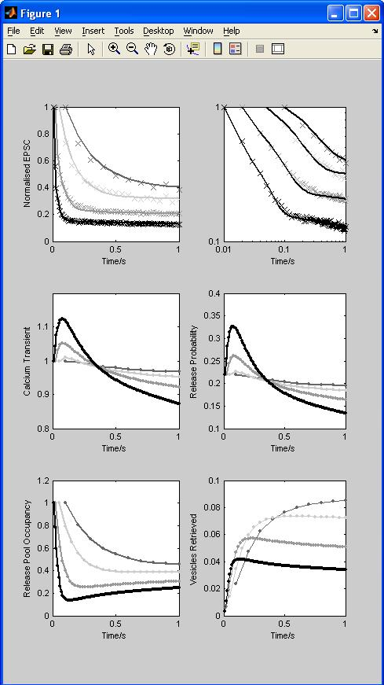

These scripts were used for the simulations in the paper: Hennig MH, Postlethwaite M, Forsythe ID and Graham BP (2008). Interactions between multiple sources of short term plasticity during evoked and spontaneous activity at the rat calyx of Held, J Physiol.
The following files are included in this archive:
fig2.m: Main simulation script, reproduces figure 2 in the paper (type "run fig2" after cd'ing to CalyxSTPModel folder):
mean_epscs.mat: Experimental data.
releasef.m: Function to simulate the EPSC amplitude during stimulation with a predefined spike train.
synOde.m: The ODEs of the model, called by releasef.m.